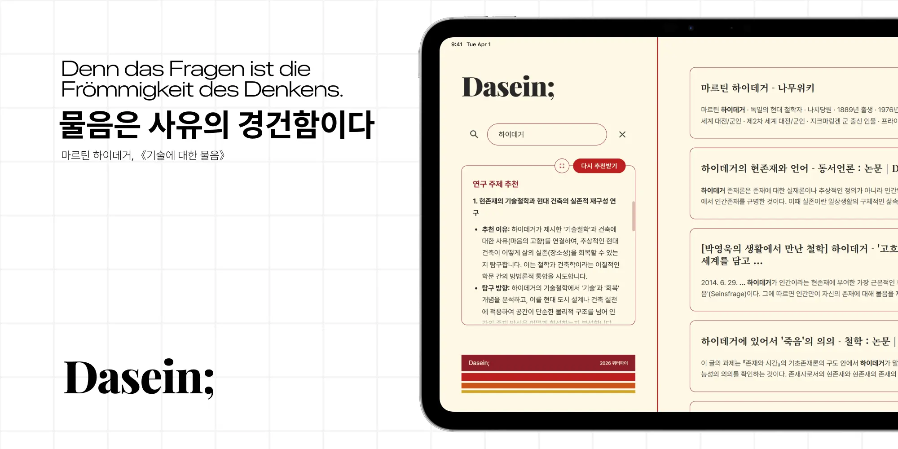

Dasein;
고뇌는 얇게. 통찰은 깊게.

Dasein; [다자인;]은 연구자의 시간을 오직 사유의 가치로 되돌려 놓습니다. 방대한 학술 데이터의 무게를 덜어내고, 하나의 명료한 통찰을 발견합니다. Dasein;으로 이제 가장 정제된 결론만을 누리십시오.
이 모든 경험의 중심에는 한층 진화한 QISS가 흐르고 있습니다. QISS는 검색을 넘어 당신의 연구 맥락을 이해하고 다음 주제까지 제안하는 지능형 엔진입니다.
QISS의 학술 전문 플랫폼으로의 비약적인 도약. 스마트함 그 자체.